SlyLED User Manual
3D Volumetric Lighting Control System — v1.0 | Validated April 2026
1. Getting Started
SlyLED is a three-tier lighting control system:
- Orchestrator — Windows/Mac/Android app: design shows and control playback
- Performers — ESP32/D1 Mini nodes: run LED effects on hardware
- DMX Bridge — Art-Net/sACN output to professional DMX fixtures
Quick Start
- Launch:
powershell -File desktop\windows\run.ps1(Windows) orbash desktop/mac/run.sh(Mac) - Open
http://localhost:8080in Chrome or Edge - Setup tab → Discover performers
- Layout tab → position fixtures
- Runtime tab → load a Preset Show → Bake & Start
2. Walkthrough: First Show in 30 Minutes
This walkthrough builds a complete DMX moving-head show from scratch — hardware discovery, fixture setup, layout, camera registration, actions, timeline, and playback. Every step was validated end-to-end during QA testing (issue #533).
What you need:
- SlyLED orchestrator running on Windows or Mac
- At least one DMX moving head connected via Art-Net/sACN bridge (e.g. Enttec ODE Mk3)
- At least one USB camera node on the network (Orange Pi or Raspberry Pi)
- All devices on the same LAN subnet as the orchestrator
Step 1 — Launch and Create a New Project
Start the orchestrator and open http://localhost:8080. The SPA loads on the Dashboard tab.
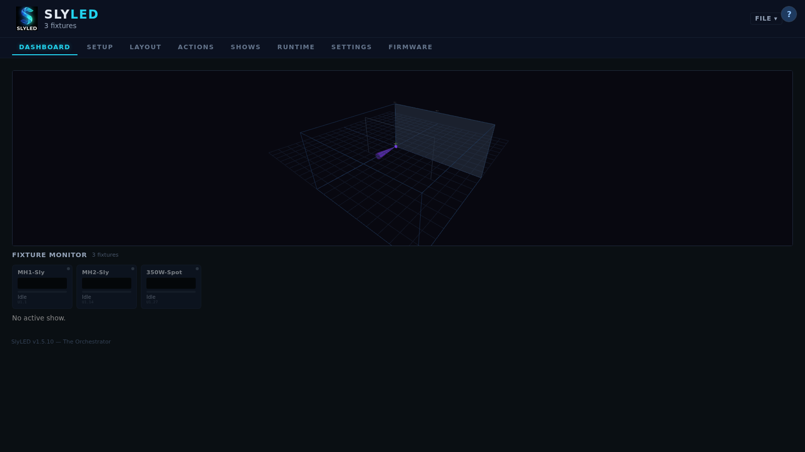
Go to Settings → Project → click New Project, then name it (e.g. "Walkthrough Show").
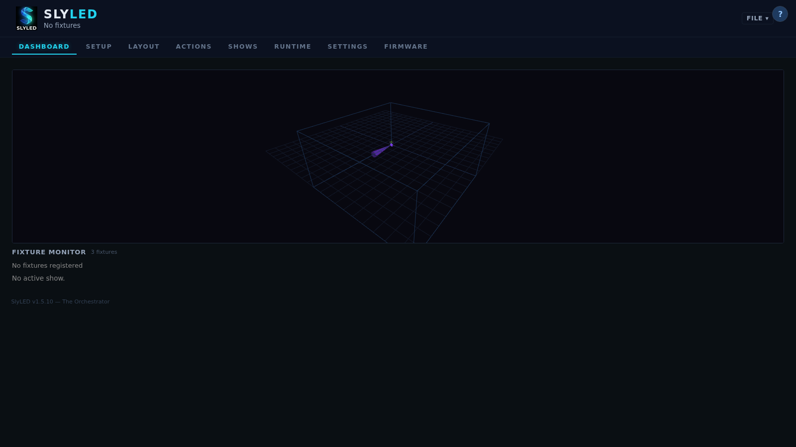
Step 2 — Set Stage Dimensions
In Settings → Stage, enter your performance area dimensions:
- Width:
6000mm (6 m) - Height:
3000mm (3 m) - Depth:
4000mm (4 m)
Click Save. The layout canvas resizes to match.
Step 3a — Discover DMX Hardware
Go to the Setup tab. In the DMX Nodes section, click Discover Nodes. SlyLED broadcasts an ArtPoll packet; Art-Net bridges on the network reply within 3 seconds.
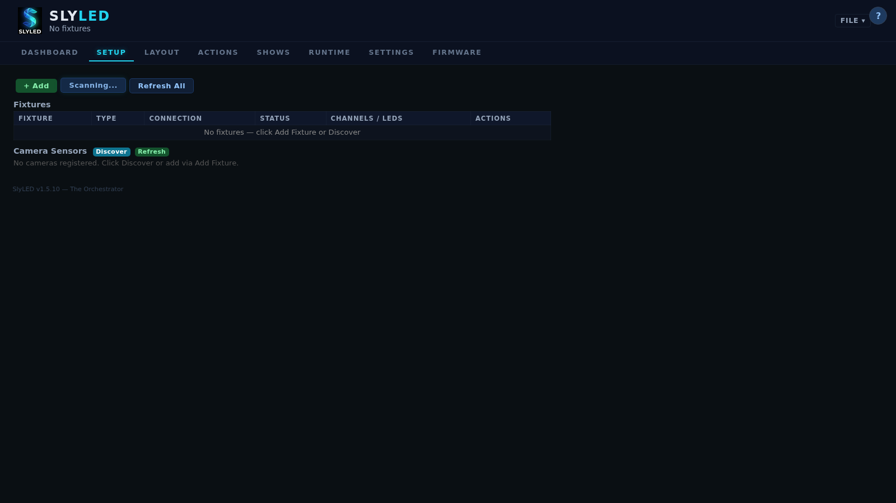
If your bridge is not found:
- Confirm it is powered and on the same LAN subnet
- Check that UDP port 6454 is not blocked by a local firewall
- Some bridges require the Art-Net source IP to match their configured subnet
Step 3b — Configure and Start the DMX Engine
Go to Settings → DMX:
- Universe Routing: Set Universe 1 → your Art-Net node IP (or broadcast
255.255.255.255) - Click Start Engine — the status indicator turns green
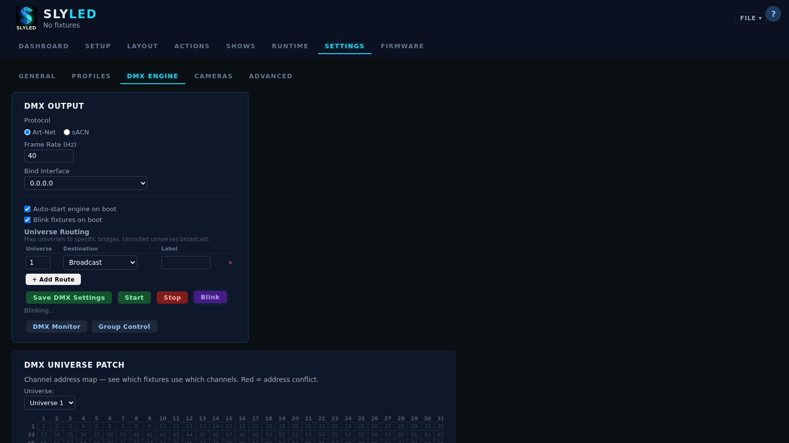
Step 4 — Add DMX Moving Head Fixtures
Go to the Setup tab → click + DMX Fixture. The fixture wizard opens.
Finding the right profile
- Type your fixture's name in the Search box (e.g. "Sly Moving Head Super Mini")
- Results show Local profiles first, then Community, then OFL (Open Fixture Library)
- If a community profile download fails ("imported: 0"), it may contain unsupported channel types — use a local generic profile or search OFL directly
- For a generic 16-channel moving head, search OFL for "moving head" and import the closest match
Fixture 1 (stage left): Name: MH1 SL, Universe 1, Start Address 1
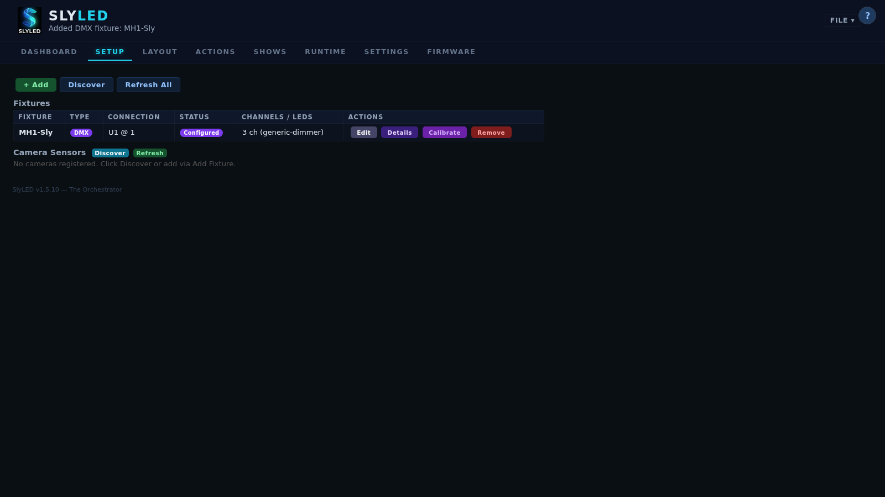
Fixture 2 (stage right): Name: MH2 SR, Universe 1, Start Address 17
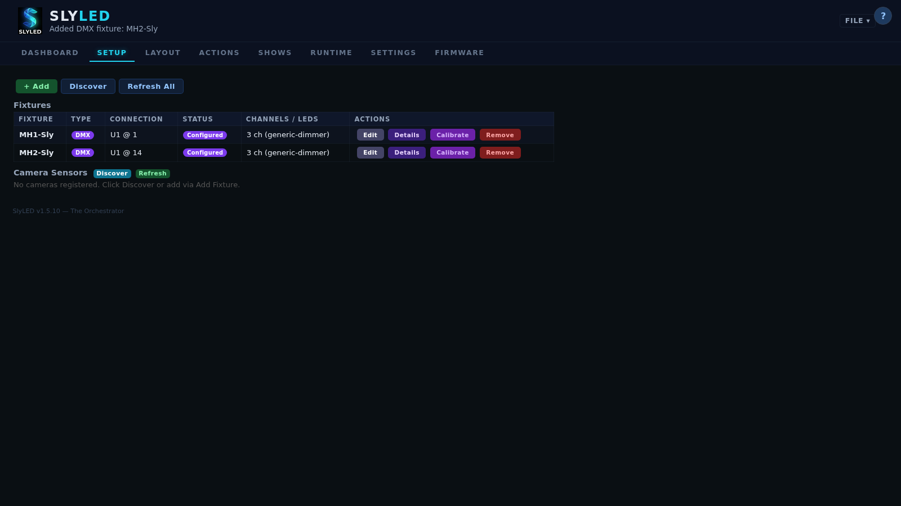
Step 5 — Add a Wash or Spot Fixture
Click + DMX Fixture again for any additional fixtures (e.g. 350W spot):
- Name:
Spot C, Universe 1, Start Address 33
Step 6 — Register Camera Nodes
On the Setup tab, scroll to Camera Nodes. Click Discover Cameras or enter IPs manually.

Click Snap to verify each camera's live feed.

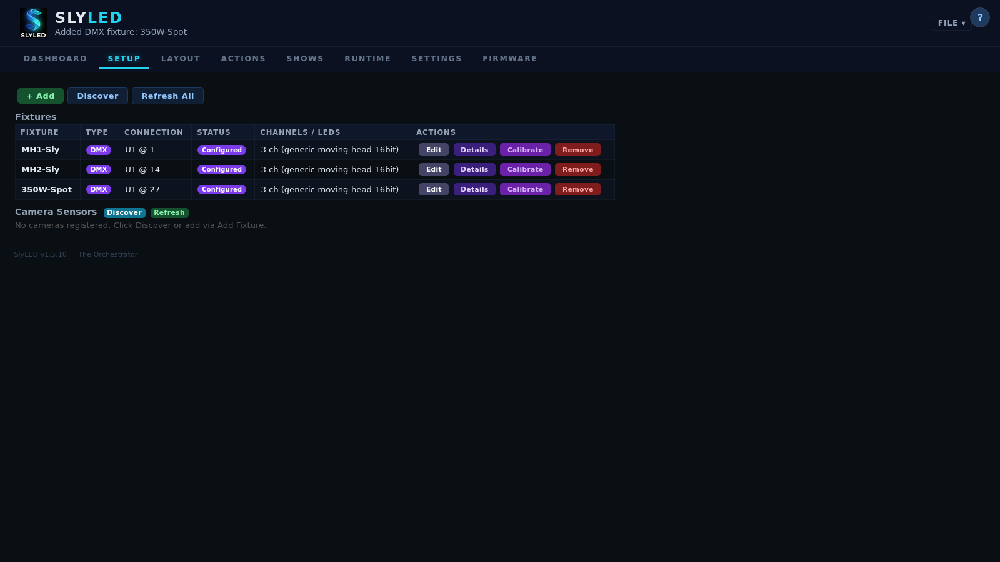
Step 7 — Position All Fixtures on the Layout
Switch to the Layout tab. Drag fixtures from the sidebar onto the canvas, then double-click each to enter exact coordinates.
| Fixture | X (mm) | Y (mm) | Z (mm) |
|---|---|---|---|
| MH1 SL | 1500 | 3000 | 500 |
| MH2 SR | 4500 | 3000 | 500 |
| Spot C | 3000 | 3000 | 500 |
| Cam Left | 0 | 2500 | 0 |
| Cam Right | 6000 | 2500 | 0 |

Step 8 — Add a Stage Object
In the Layout tab, click + Object:
- Name:
Music Stand - Type: Prop (moving — trackable by movers)
- Position: X: 3000, Y: 0, Z: 2000 (center stage, floor level)
- Size: 300 × 1200 × 300 mm
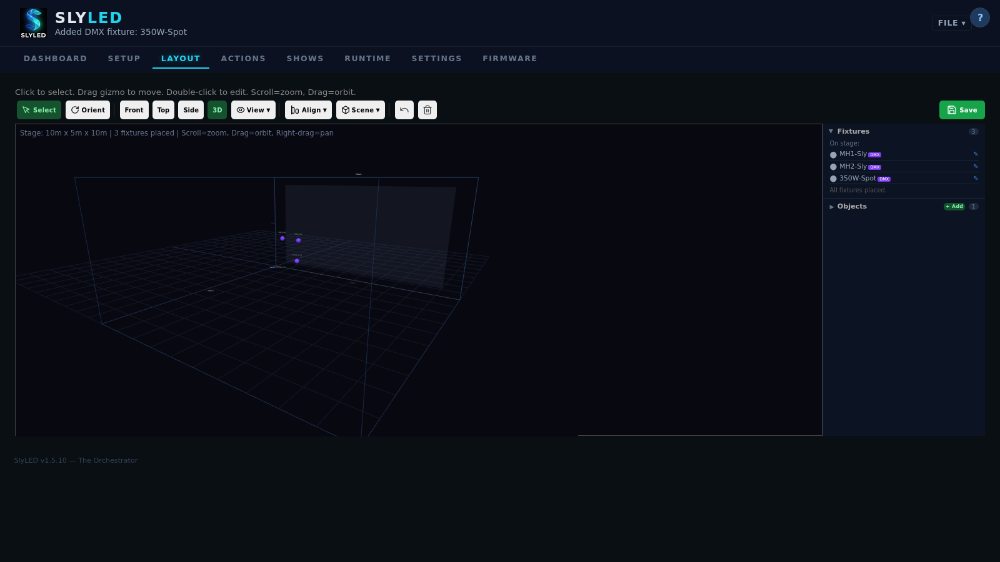
Step 9 — Run Mover Calibration
Before moving heads can accurately aim, calibrate each one. Requires: camera nodes positioned (Step 7) + DMX engine running (Step 3b).
In the Layout tab, double-click MH1 SL, then click Calibrate.

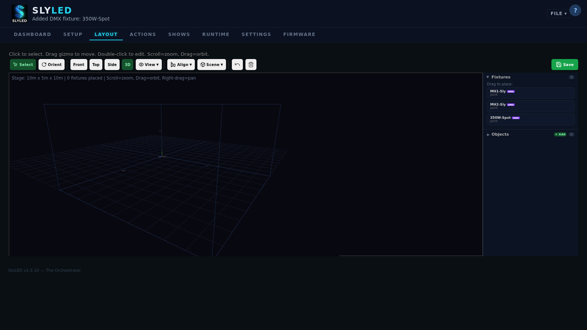
- Select Green as the beam color (good contrast on dark floors)
- Click Start Calibration
- The wizard runs: coarse scan → BFS mapping → grid build (3-5 min per head)
- Repeat for
MH2 SR
Step 10 — Create Actions
Go to the Actions tab. Create two actions:
Action 1: Aim Red (static spotlight)
- Click + New Action
- Name:
Aim Red, Type:DMX Scene, Colour: Red (255, 0, 0), Dimmer: 255 - Click Save Action

Action 2: Figure Eight (dynamic sweep)
- Click + New Action
- Name:
Figure Eight, Type:Track, Target Objects: empty (track all), Cycle Time: 4000 ms - Click Save Action
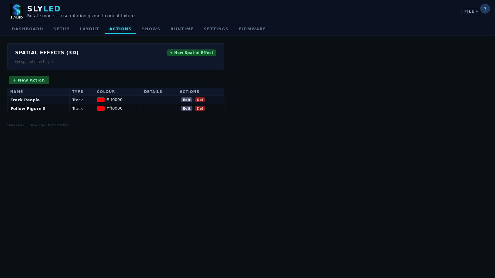
Step 11 — Build a Timeline
Go to the Runtime tab (labeled Shows in some versions). Click + New Timeline. Enter name Walkthrough Show and duration 120 seconds.
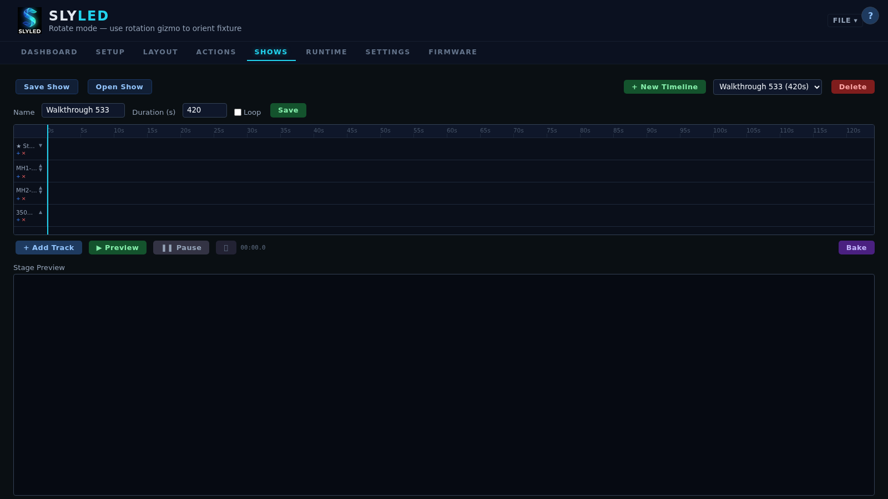
Click + Add Track for each fixture and assign action clips:
- MH1 SL:
Aim Redat 0s (10s) →Figure Eightat 10s (110s) - MH2 SR:
Figure Eightat 0s (120s) - All Performers: ambient color wash
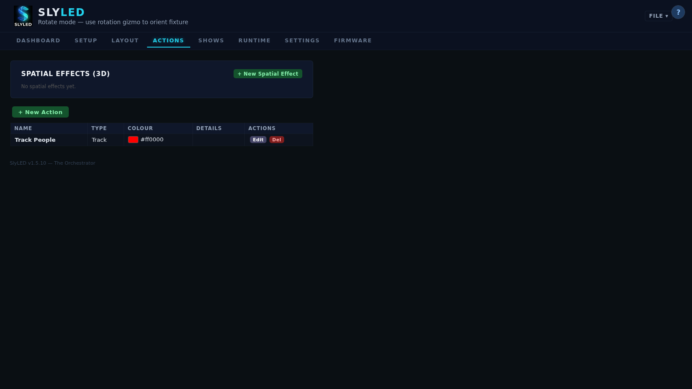
Step 12 — Bake and Start Playback
- Click Bake — compiles the timeline. Progress shows frame count and segments.
- Click Start — NTP-synchronized playback begins.
To test a blackout, click Stop then fire Blackout from Settings → Group Control.
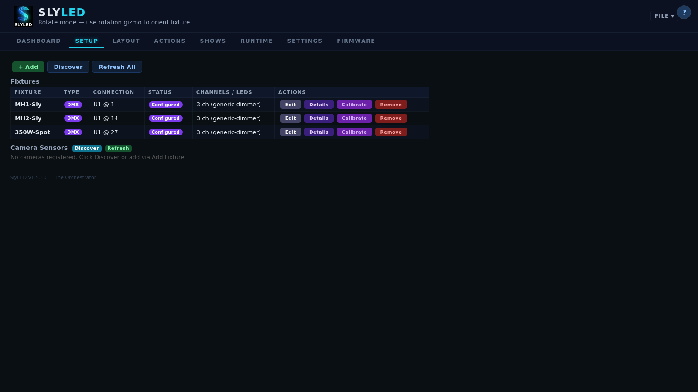
Save everything via Settings → Project → Export (.slyshow file).
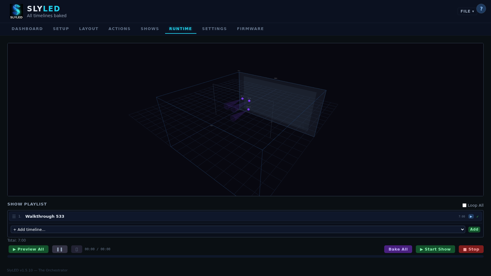
Walkthrough Troubleshooting
| Problem | Solution |
|---|---|
| No Art-Net nodes discovered | Confirm bridge on same subnet; UDP 6454 not blocked |
| DMX engine won't start | Settings → DMX → verify universe routing configured |
| Community profile download fails | Unsupported channel types — use local or OFL profile |
| Fixture position resets to 0,0,0 | Use the edit dialog Save button; wait for save to complete |
| Camera discover returns 0 | Wait 3s and retry — first broadcast arrives before socket binds (#542) |
| Calibration fails to detect beam | Dim ambient light; verify beam color contrasts with floor |
| Figure Eight doesn't move heads | Verify Track action has no fixture restriction; confirm engine running |
| Timeline tracks missing | Add tracks manually after timeline creation — not auto-created |
3. Platform Guide
Windows Desktop (SPA)
Primary design and control interface. Full-featured 7-tab SPA with 2D/3D layout, timeline editor, spatial effects, DMX profiles, and firmware management.
- Launch:
powershell -File desktop\windows\run.ps1or runSlyLED.exe - Install: Run
SlyLED-Setup.exe(includes system tray icon)
Android App
Live operator tool for running shows from your phone. Connects to the desktop server over WiFi.
- Install: Transfer
SlyLED-debug.apkto your phone - Connect: Scan the QR code on the desktop Settings tab, or enter server IP manually
Android screens: Stage (live 3D viewport, play/stop), Control (timeline start, brightness, Pointer Mode), Status (device monitoring, camera tracking), Settings.
Pointer Mode: Select a DMX moving head, hold your phone, and point where you want the light. Pan/tilt follows your phone orientation at 20 Hz.
4. Fixture Setup
Fixture Types
| Type | Description |
|---|---|
| LED | Linked to a performer child with LED strings |
| DMX | Linked to a DMX universe/address with profile and aim point |
| Camera | USB camera sensor on an Orange Pi/RPi node |
Adding DMX Fixtures (Wizard)
Click + DMX Fixture on the Setup tab to launch the 3-step wizard:
- Choose Fixture — search Local + Community + OFL simultaneously
- Set Address — universe, start address, name; real-time conflict detection
- Confirm — review settings, click "Create Fixture"
Profile Search Priority
When searching for a profile, results are ranked: Local (custom) → Community (shared library) → OFL (Open Fixture Library, 700+ fixtures). If a community profile fails to import due to unsupported channel types, fall back to an OFL profile with similar channel layout.
DMX Monitor
Settings → DMX → DMX Monitor: real-time 512-channel grid per universe. Click any cell to set a value. Color-coded by intensity.
Group Control
Settings → DMX → Group Control: master dimmer, R/G/B sliders, and quick color preset buttons (Warm, Cool, Red, Off) for all fixtures in a group.
5. Stage Layout
2D Canvas
The Layout tab shows a 2D front view of the stage. Stage dimensions are set in Settings.
| Action | Desktop |
|---|---|
| Place fixture | Drag from sidebar |
| Move fixture | Drag on canvas |
| Edit coordinates | Double-click → enter values → Save |
| Remove fixture | Double-click → Remove |
| Zoom | Scroll wheel |
3D Viewport
Toggle to 3D mode for an interactive Three.js scene with orbit camera, beam cones as 3D geometry, draggable aim spheres for DMX fixtures, and object planes with transparency.
Move / Rotate Mode
Keyboard shortcuts M (move) and R (rotate) toggle interaction modes. In Rotate mode, a compass ring appears around DMX fixtures — drag it to aim the beam. Press Ctrl+Z to undo.
Coordinate System
- X = horizontal (mm), Y = height from floor (mm), Z = depth (mm)
- Stage origin: bottom-left corner of the front face
6. Stage Objects
| Type | Mobility | Description |
|---|---|---|
| Wall | Static | Back wall — stage-locked |
| Floor | Static | Stage floor — stage-locked |
| Truss | Static | Lighting truss bar |
| Prop | Moving | Performer or set piece — trackable by moving heads |
| Custom | Moving | User-defined object |
Patrol Motion: Moving objects can patrol back and forth. Configure axis (X/Z/X+Z), speed, range, and easing. Evaluated at 40 Hz during DMX playback.
Temporal Objects: External systems (cameras) create short-lived objects via POST /api/objects/temporal. Auto-expire when TTL elapses.
7. Creating Spatial Effects
Spatial effects operate in 3D space — a sphere of light sweeping across the stage illuminates different fixtures at different times.
Navigate to Actions tab → + New Action → set Type to Spatial Effect.
| Field | Description |
|---|---|
| Shape | Sphere, Plane, or Box |
| Color | RGB color applied to pixels inside the field |
| Motion Start/End | 3D positions in millimeters |
| Duration | Travel time from start to end |
| Easing | Linear, ease-in, ease-out, ease-in-out |
SlyLED supports 19 action types total: 14 classic LED actions + 5 DMX/spatial (DMX Scene, Pan/Tilt Move, Gobo Select, Color Wheel, Track).
8. Track Action
Makes DMX moving heads follow moving objects in real-time during playback.
| Field | Description |
|---|---|
| trackObjectIds | Target object IDs (empty = all moving objects) |
| trackCycleMs | Cycle time when more objects than heads (default 2000ms) |
| trackOffset | Global [x,y,z] offset in mm |
| trackFixtureIds | Specific fixture IDs (empty = all moving heads) |
| trackFixedAssignment | Fixed 1:1 — each head gets one target |
Assignment rules: Equal heads and objects → 1:1. More heads than objects → spread. More objects than heads → cycle (or fixed mode: extras ignored).
9. Building a Timeline
- Go to Runtime tab → + New Timeline
- Enter name and duration (seconds)
- Click + Add Track for each fixture or group
- Click + Add Clip to assign effects with start time and duration
Clips can overlap — they blend according to their effect's blend mode. Track actions (type 18) evaluate in real-time without per-frame baking.
10. Baking & Playback
- Click Bake → progress shows frame count and segments
- Click Sync to push instructions to performers via UDP
- Click Start for synchronized NTP-timed playback
Output: action segments (19 types), LSQ files (raw RGB at 40 Hz), and preview data for the emulator.
11. Show Preview Emulator
Both desktop and Android include a real-time show preview. The emulator canvas shows LED string dots, DMX beam cones with live colors, aim dots, fixture labels, and a time counter.
During playback, spatial effects render as animated translucent shapes moving across the stage — spheres, planes, and boxes with live position labels.
12. DMX Fixture Profiles
Built-in Profiles
| Profile | Channels | Features |
|---|---|---|
| Generic RGB | 3 | Red, Green, Blue |
| Generic RGBW | 5 | RGBW + Dimmer |
| Generic Dimmer | 1 | Intensity only |
| Moving Head 16-bit | 16 | Pan, Tilt, Dimmer, Color, Gobo, Prism |
Open Fixture Library
Click Search OFL in Settings → Profiles to browse 700+ fixtures. Search by name, manufacturer, or keyword. Import All bulk-imports an entire manufacturer's catalog.
Community Library
Click Community to browse profiles shared by other SlyLED users. Download to import locally. Share custom profiles for others to discover.
pan-tilt-speed, ColorTemperature). Fall back to OFL or a local custom profile. Issue #544 tracks adding support for these types.13. Preset Shows
14 pre-built shows available from Runtime → Load Show → Presets:
| Preset | Description |
|---|---|
| Rainbow Up | Rainbow plane rising floor to ceiling |
| Rainbow Across | Rainbow sphere sweeping left to right |
| Slow Fire | Warm fire effect on all fixtures |
| Disco | Pastel twinkle sparkles |
| Ocean Wave | Blue wave sweep with teal wash |
| Sunset Glow | Warm breathe with golden sweep |
| Police Lights | Red strobe with blue flash sweep |
| Starfield | White sparkles on dark background |
| Aurora Borealis | Green curtain with purple shimmer |
| Spotlight Sweep | Warm orb — moving heads track it |
| Concert Wash | Magenta flood + amber tracking spot |
| Figure Eight | Crossing orbs — heads trace X paths |
| Thunderstorm | Lightning strikes — heads chase bolts |
| Dance Floor | Fast orbiting spots — rapid tracking |
14. Camera Nodes
Camera nodes are Orange Pi or Raspberry Pi SBCs with USB cameras. Only USB cameras are supported — Pi CSI ribbon cameras are not.
Adding a Camera Node
- Flash an Orange Pi with the supported OS image
- Connect to the same WiFi network as the orchestrator
- In the Firmware tab, configure SSH credentials (default:
root/orangepi) - Click Scan for Boards to find the device
- Click Install to deploy firmware via SSH+SCP
Object Detection
Click Detect Objects to run YOLOv8n AI detection on the current camera frame. Results show bounding boxes with labels and confidence percentages.
Mover Calibration
The calibration wizard builds an interpolation grid mapping every stage position to exact pan/tilt angles. Requires a positioned camera node and the DMX engine running.
- Layout tab → double-click a DMX moving head → click Calibrate
- Choose beam color (Green for dark floors, Magenta for light floors)
- Click Start Calibration — the wizard runs automatically (3-5 min)
Tracking Configuration
Each camera fixture has per-camera tracking settings accessible from its edit dialog:
| Parameter | Default | Description |
|---|---|---|
| FPS | 2 | Detection frames per second |
| Threshold | 0.4 | Minimum confidence to accept a detection |
| TTL (s) | 5 | Seconds before a lost track expires |
| Re-ID (mm) | 500 | Max distance to match a detection to an existing track |
15. Firmware & OTA Updates
USB Flash
- Go to Firmware tab
- Select COM port and firmware binary
- Click Flash — progress shows percentage
OTA (Over-the-Air)
- Set WiFi credentials on the Firmware tab
- Click Check for Updates — shows per-device version comparison
- Click Update on any outdated performer
16. System Limits
| Resource | Tested | Recommended Max |
|---|---|---|
| DMX fixtures | 120 | 500+ |
| LED performers | 12 | 50 |
| Universes | 4 | 32,768 (Art-Net) |
| LEDs per string | — | 65535 (uint16) |
| Timeline clips | 50 | 200+ |
| API response (132 fixtures) | < 1ms | Sub-millisecond |
17. Troubleshooting
| Problem | Solution |
|---|---|
| Runtime view empty | Check fixtures are positioned in Layout |
| Beam cone wrong direction | aimPoint[1] is height (Y), not depth (Z) |
| 3D viewport not rendering | Use Chrome/Firefox/Edge with WebGL support |
| Performers not syncing | Check all devices on same WiFi network |
| No Art-Net nodes discovered | Check UDP 6454 not blocked; bridge on same subnet |
| Community profile won't import | Unsupported channel types — use local/OFL profile (#544) |
| Camera discover returns 0 | Wait 3s and retry — UDP timing issue (#542) |
| Fixture position saves as 0,0,0 | Use the edit dialog Save button; wait for completion |
| Help panel shows "not available" | Section mapping issue — will be fixed in a future release (#545) |
SlyLED User Manual v1.0 · Generated April 2026 · Open source at github.com/SlyWombat/SlyLED